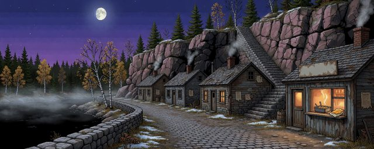
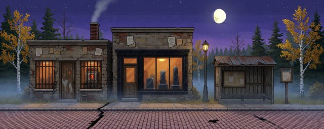
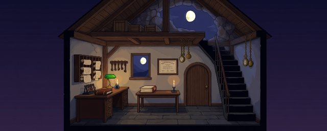
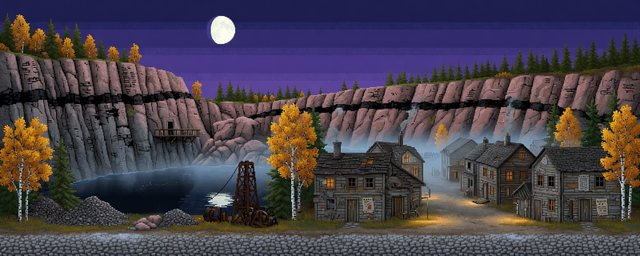
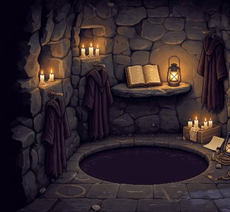
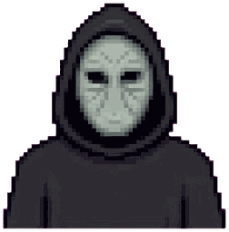

The story
Closing night in Marrowmere
A quarry town, a roadside Show staffed by its own dead, a Clerk closing everything, and something in the stone. Every word below is true. Marrowmere has simply had a long time to decide what to volunteer.
I. The town
A town on the stone
The Township of Marrowmere sits on the north shore of Cradock Lake in northern Ontario, half an hour east of Gaspard Falls. Only the maps call the lake that. In town it is the Mere.
The road in leaves the Shield Road at a gas bar and a motel and climbs three kilometres through jack pine. The coaches stop at the old viaduct, and everyone walks the rest: across the gorge the town calls the Gill, and in through the Gate.
The town climbs Marrow Ridge, pink and grey granite with a near-black seam down its spine. In 1880 a railway blast opened the ridge and found four skeletons seated inside it in band uniform. They stood up and played. The men who heard them founded a town around the music.
The Marrow Ridge Granite Company worked the quarry until 1974. Today the town has 712 living residents, 86 kept ones, and 31 who fit neither column.

Low Street
Cottages at the foot of the Black Stair, and the smell of chips halfway up it.
II. The Show
The dead do the scaring
When the Company left, the town found new work it already had the staff for. Since 1976 its own dead have done the scaring in a roadside Show.
About one sudden death in eight on the stone comes back at dusk on the third night, and the sexton walks them home. They are themselves, only a little chilly. Their breath does not fog, and they cannot leave the township. The town calls them the kept. By-law 3 lets them be paid but not own property, so the Show pays them to scare, in hospital-linen sheets from 1976. Their own shoes peek out underneath.
There is a Scare House with a fright meter that has opinions, a werewolf who is very polite off duty, and a hotel where one room is always reserved. It is a very good Show. The dead have had a lot of practice.

The Scare House
Pay office, fright meter, monumental masons. Marrowmere sells you a scare, then a souvenir, then a headstone.
III. Closing night
Thursday 24 September 2026
Tonight is the last night of the season and the 125th anniversary of the Great Fall. The coaches arrive at 5:45 PM in daylight. Full dark comes after nine under a bright moon. First frost is due, mist lies on the lake, and the loons are still calling.
Josiah Gumm has been Clerk of the Township since 1888. He is kept, and particular. Tonight he is closing the town piece by piece, and pinning a signed, stamped notice about it to every lamp-post. The Show Committee calls it sabotage. So does everyone with takings riding on the last tour.
You are the night attendant. Find the saboteur, and find out why.

The Clerk's office
The Clerk writes without note or comment. Mostly.
IT WILL HOLD.
IV. The stone
Something in the stone
The seam down the ridge is gneiss, nearly three billion years old. The quarrymen called it keepstone. The trade sold it as Marrow Black, and the Keepsake Shop still does.
Keepstone holds things. A bell note lingers in it. Warmth stays in it long after sundown.
The Company closed the quarry in 1974. The seam is still there. Something in it is listening.

The Bite
The dead quarry at the ridge's west end. Note the black seam in the rock. The quarrymen did.
How it plays
Choices kill
Four residents can die tonight by your word. This page will not tell you who.
Every death is foreshadowed, and every fatal line is offered beside a safe one. The town tells you a great deal over the evening, mostly by accident. Listen before you answer.
There is no gore in Marrowmere, ever. A death is a sound, and then an absence.
Three endings. One is hidden. That is all this page will say about them.
A rumour
The Congregation
Nobody in town will say it out loud, so here it is as rumour: a masked congregation meets somewhere in the ridge and worships something in the stone.
They say its members wear charcoal wool robes tied with quarry rope and smooth masks of pale grey stone, with eye slits and no mouth. They say some of them are friendly people you will meet all evening.
Ask about any of it and the talk turns to the weather, which is also turning.

Somewhere in the seam
Robes on pegs around a black pool. Nobody admits to knowing where this is.

The mask
Light grey keepstone, two eye slits, no mouth.
Coming 2027
See it for yourself
Wishlist it on Steam to hear when the Gate opens.